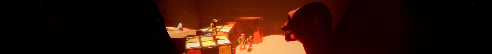

Hello Hello, this is Benjamin C.
I'm the team lead on ClayTown Horror. I handle everything visual with the game like, models, textures, and animation. I'm completely self taught on just about everything I do, and have been working on 3D assets and animation for about 6 years now. The original idea for ClayTown Horror is from me, though the idea has changed a lot since then due to the teams insights. I'm incredibly happy with how far ClayTown Horror has come and excited to see how far it will go.

Hi, I'm MrKosiej, lead programmer (actually scripter) on the game.
I make stuff work basically. I've been in the team since the very beginning (so mid 2020) and Making Games since i could play them, but doing it more seriously since i finally learned UE4, so for about 3 years.

Hey there, I'm Junior and I'm a 3D artist taking care of assets creation and environment stuff.
Really excited to be a part of The Nightmare Jar since creepy stuff is my passion in all shapes and forms. I've been doing some prototypes and small thingies but this is my first time modeling at a larger scale, good vibes to y'all.

Heyo, I'm DarVin, I tackle the games sound side.
I've been a part of the team since the summer of 2021 and have been working on it since. I've been studying music ever since I can remember and now I'm extremely excited to be granted an opportunity to tackle both of my greatest passions which are games and music. This game is my first ever taste of working on the Unreal engine and any kind of game design in general.

Howdy, I'm Matt and I'm the Community Director and Executive Assistant for The Nightmare Jar.
I'm primarily the one who takes care of things like our social media, & maintaining the Discord server, planning community activities (streams, contests, etc.), and taking care of the smaller stuff so these guys can stay on track (writing the in-game notes, handling emails, and a lot more). These guys tend to stay pretty busy, so please direct any questions/comments you may have about the game, the server, or our team to me and I'll do my best to help take care of it!

Hi, I'm Simon Jones and I created the music soundtrack for Claytown Horror.
I started making music in my bedroom on a Commodore Amiga 500 back in the 16 bit era of gaming, and have been a full time freelance composer for the last 2 years. This is my first game soundtrack! It has been a real pleasure making music for such a great looking and atmospheric game.

